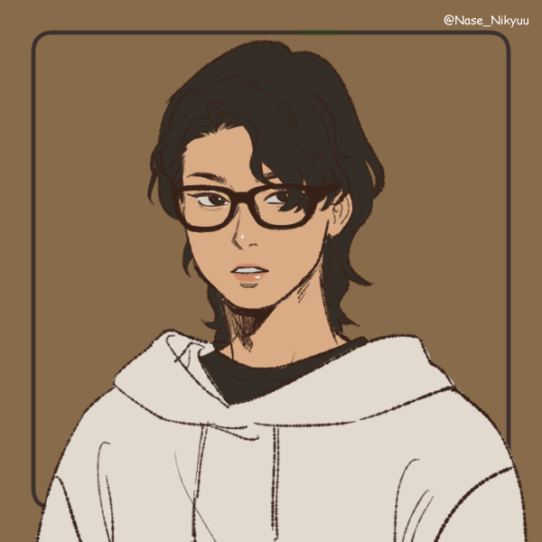

Biodata
Seorang manusia lahir dengan nama Timotius Fadhlan F F di kota Bandung, pada tanggal 09 september 2001. Dari kecil ia memiliki cita-cita sebagai pembalap tetapi terhenti karena orang tua nya yang terlalu posesif dan takut kehilangan anaknya akibat kecelakaan.
Dari kecil ia selalu berpindah kota. Saat kelas 1 SD, ia bersekolah di Bandung. Saat kelas 4 SD, ia pindah ke Surabaya. Disana ia tinggal selama 5 tahun dan mendapatkan banyak relasi juga pengalaman yang sebelomnya belum pernah ia dapatkan. Saat SMA ia kembali lagi ke Bandung untuk melanjutkan study.
Sekarang ia sedang melanjutkan study nya di Universitas Tarumanagara, Jakarta. Disana ia hanyalah mahasiswa yang biasa. Ia tidak mengikuti BEM maupun DPM. Tetapi mengikuti beberapa UKM, seperti KMK Adhyatmaka dimana sekarang ia menjabat menjadi BPH dan juga menjadi angota BAR.